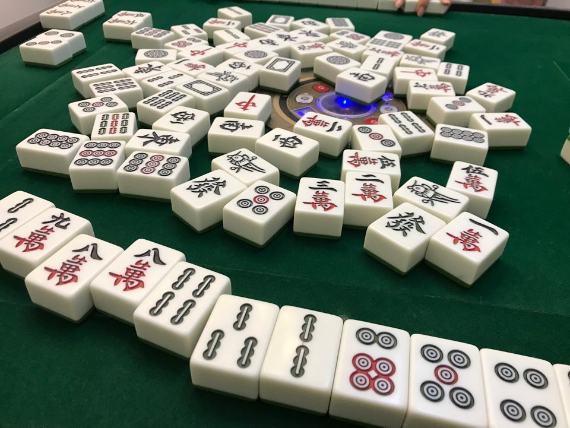
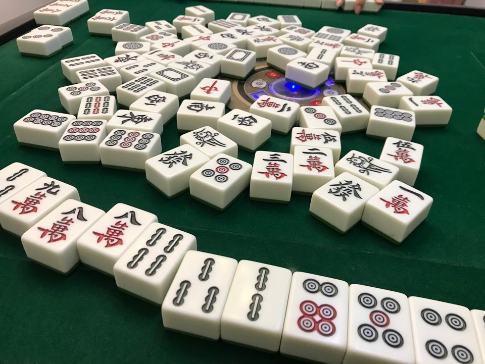

Welcome to yilin diary in shenzhen
Hi :) I'm yilin, this is my diary
Yilin in SZ
 


ShenZhen
2019년 03월 01일~ 2020년 01년 17일 중국 심천대학교에서 교환학생을 하다.
전공인 중국어를 더 많이 배우기 위해, 그리고 더 넓은 세상을 만나기 위해 교환학생을 다녀왔습니다. 중국에서 1년 동안 중국어뿐만 아니라 세상을 보는 눈도, 나를 대하는 태도도 정말 많이 달라졌어요.
Whan I learned in shenzhen
내가 심천에서 배운 것
우선 1학기가 지나고 여름방학에 HSK 5급을 취득한 것이 가장 큰 성취입니다. 사실 HSK 6급도 계속 준비중인데요 코로나때문에 시험이 밀려 취득하지 못했어요. 빠른 시일 내에 취득 할 예정입니다. 가장 뿌듯했던 순간은 영화관에서 자막 없이 중국 영화를 보고 이해했을때가 아닐까요? 처음엔 잘 안들리던 것들이 두번, 세번 보니 자막 없이도 작은 디테일까지 이해 할 수 있게 되더라고요. 역시 언어는 많이 듣고 많이 접하는 것이 베스트인 것 같습니다.
언어뿐만 아니라 자립심, 용기 등등 많은 것을 배웠어요.
Unforgettable memory
가장 좋았던 순간들
물론 심천에서의 하루하루가 여행 같은 시간이었지만 중국에서 다녔던 여행지들 모두 기억에 남아요. 가장 첫 여행은 샤먼이었습니다. 샤먼은 중국 남부에 있는데 그 근처 도시 복건성에 가면 토루를 볼 수 있어요. 중국의 독특한 건축 양식 중 하나이죠. 토루 위에서 내려다보는 토루 안의 모습은 정말 영화같아요. 그래서인지 토루를 배경으로 한 영화가 매우 많답니다. 곧 개봉을 앞둔 디즈니 뮬란 실사판에서도 토루의 모습을 볼 수 있다고 해요. 그리고 제 인생 첫 홀로 여행은 중국 베이징이었어요. 만리장성을 혼자 오를때 개운함과 좋은 날씨 덕에 그 풍경이 잊히지가 않아요. 상해도 좋았는데요. 다만 국경절에 가서 인산인해에 사람에 깔려 죽을뻔 했습니다. 역시 공휴일에 중국여행은 안하는게 좋겠어요. 그리고 또 인생 여행지는 중국 운남성입니다. 그 중에서도 샹그릴라요. 샹그릴라는 소설 속에 나오는 유토피아 같은 꿈의 도시를 의미해요. 넓은 초원에서 야크와 말들이 뛰노는걸 볼 수 있어요. 돈 벌어서 샹그릴라에서 한 달 살기 해보는 것이 꿈입니다.
my hobby in shenzhen
심천 대학교 중앙 댄스동아리 W.E.
본래 춤과는 정말 거리가 먼 사람입니다. 하지만 친구를 사귀기 위해 그리고 새로운 도전을 위해 심천대학교 중앙 스트리트 댄스동아리 W.E.에 들어갔습니다. MT도 가고 댄스 사이퍼도 보고 즐거운 경험이었어요.
my faovorites
심천에서 가장 좋아하던 것은 탕후루랑 시차라는 카페입니다.
카페다니는 것을 원래 좋아하는데요. 중국에서 가장 자주 갔던 카페는 시차라는 카페입니다. 밀크티 전문점이에요. 한국에도 있죠. 스타벅스 리져브처럼 시차도 시차랩이라는 스페셜 매장을 따로 두고 있습니다. 시차 랩의 수플레가 정말 맛있어요. :)